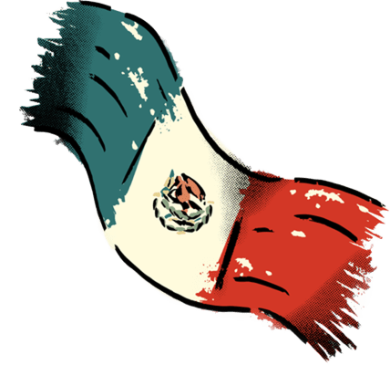
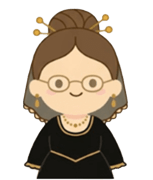
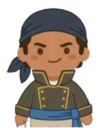
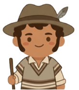
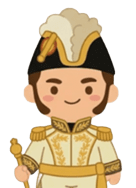
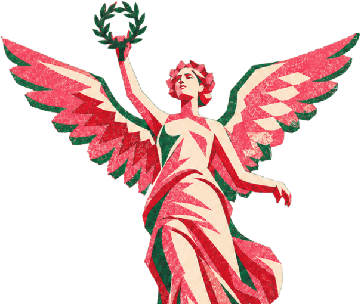

MÉXICOConocido como el "Padre de la Patria", dio el Grito de Dolores la madrugada del 16
de septiembre de 1810 para iniciar el movimiento.
Llamada "La Corregidora", alertó a los insurgentes sobre el descubrimiento de la
conspiración contra el virreinato.

Sacerdote y militar conocido como el "Siervo de la Nación", organizó la segunda etapa
de la lucha y redactó los Sentimientos de la Nación.

Militar del ejército español que se unió a la conspiración y fue uno de los principales
líderes militares al inicio de la guerra.
Insurgente que resistió en el sur durante los años difíciles de la resistencia y pactó el
Abrazo de Acatempan para la consumación.

Militar que firmó el Plan de Iguala y entró al frente del Ejército Trigarante para lograr
la independencia definitiva.

